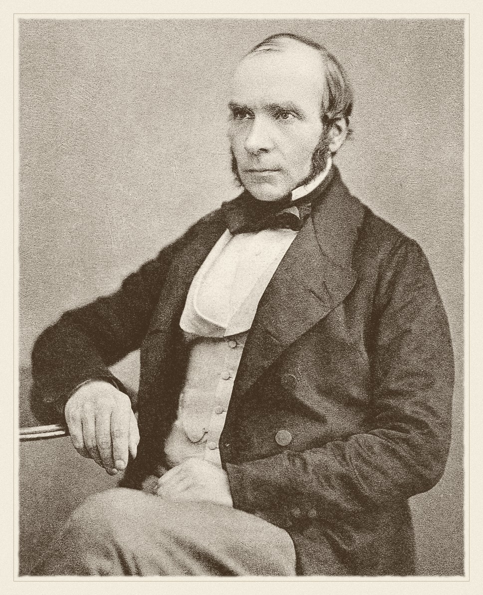
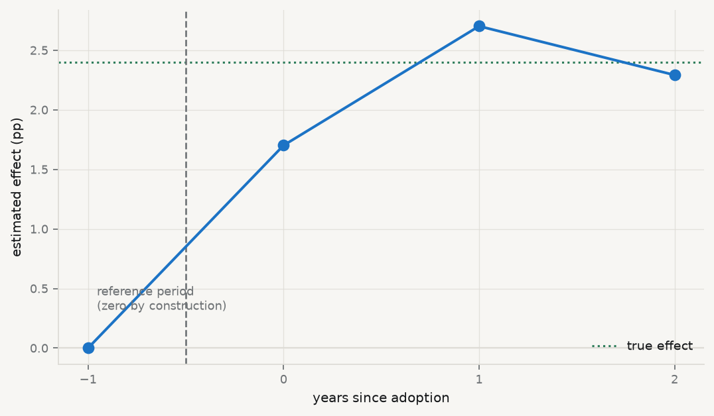

Chapter 10 recovered a causal effect by assuming that the variables driving treatment were all observed, and then conditioning on them. That assumption is untestable and, in most settings, false — countries do not adopt policies for reasons that are fully captured by three indicators.
This chapter takes the opposite route. Rather than measuring the confounders, it uses timing to remove them: if a country’s unobserved characteristics are stable over a short window, then comparing that country to itself before and after differences them away. The remaining problem — that things change over time for everyone — is handled by a second comparison, against units that did not adopt.
Two differences, hence the name.

John Snow · 1813–1858
Mapped cholera deaths in 1854 and read a natural experiment off the water supply — before the statistics existed to justify it.
unknown, Autotype 1856, published in 1887. Public domain, via Wikimedia Commons.
From the archive · Snow, 1855
John Snow is remembered for the Broad Street pump, which is the wrong story. The map of cholera deaths clustered around one pump was suggestive, but a sceptic could reply that the people near the pump were poorer, more crowded, and different in a dozen ways from those further off — the selection problem of chapter 10, in 1854.
His second study answered that objection, and it is the one that matters here. Two companies supplied water to overlapping districts of south London, their pipes running down the same streets so that neighbouring houses drew from different sources. In 1852 one of them, Lambeth, moved its intake upstream of the sewage outflows; the other, Southwark and Vauxhall, did not. Snow could therefore compare cholera mortality in households that differed in water supply but not, in any systematic way, in anything else — and compare the change over time between the two.
He called it “an experiment on the grandest scale”, and was explicit that its force came from the assignment: no one chose their supplier, the pipes had been laid years earlier for commercial reasons unrelated to the disease. That is the argument every difference-in-differences paper is still making. Snow made it before the germ theory of disease existed — he had no mechanism, only a design.
11.2 The two differences
Let \(\bar Y_{g,t}\) be the average outcome for group \(g\) in period \(t\), with \(g \in \{\text{treated}, \text{control}\}\) and \(t \in \{\text{pre}, \text{post}\}\). The estimator is
\[
\widehat{\text{DiD}}
=
\underbrace{\big(\bar Y_{\text{tr,post}} - \bar Y_{\text{tr,pre}}\big)}_{\text{change among the treated}}
-
\underbrace{\big(\bar Y_{\text{co,post}} - \bar Y_{\text{co,pre}}\big)}_{\text{change among the controls}} .
\]
The first difference removes everything time-invariant about the treated group, observed or not — its wealth, its institutions, its geography. The second estimates what would have happened anyway, and subtracting it removes any shock common to both groups.
What licenses the subtraction is a single assumption, and it is worth stating in its exact form because the loose version is misleading.
Parallel trends — in the absence of treatment, the average outcome of the treated group would have followed the same trajectory as the control group. Formally, \[
\operatorname{E}[Y_{\text{tr,post}}(0) - Y_{\text{tr,pre}}(0)]
=
\operatorname{E}[Y_{\text{co,post}}(0) - Y_{\text{co,pre}}(0)] .
\] It is not an assumption that the groups are similar — they may differ by any amount in level — only that the gap between them would have stayed constant.
The assumption concerns \(Y(0)\) for the treated group in the post period, which is precisely the counterfactual that does not exist. Parallel trends is therefore untestable, in the same way and for the same reason as chapter 10’s conditional independence. What can be examined is whether the trends were parallel before treatment, which is evidence about plausibility rather than a test of the assumption itself.
Note also that parallel trends is not invariant to how the outcome is measured. If two groups have parallel trends in levels they generally do not in logs, and vice versa, so the choice of scale is part of the identifying assumption rather than a presentational detail.
11.3 As a regression
The two-by-two table is easier to work with as a regression, and the regression form is one you have already met. With unit and period fixed effects,
where \(D_{it}\) is 1 when unit \(i\) is treated in period \(t\), the coefficient \(\delta\)is the difference-in-differences estimate. That is chapter 6’s two-way fixed effects specification with the treatment indicator in place of a continuous regressor: the unit effects absorb the first difference, the period effects the second.
The regression form buys three things — covariates, more than two periods and more than two groups, and standard errors. On the last, chapter 3’s finding returns with force: DiD data are panels, residuals are serially correlated within unit, and treating the country-years as independent understates the standard error badly. Clustering by unit is the minimum, and the classic demonstration of what happens otherwise is Bertrand, Duflo and Mullainathan’s, cited in chapter 3.
11.4 When treatment arrives at different times
The clean two-by-two case has one treatment date. Real policies arrive in different years for different units — which is exactly what the course fixture contains — and for two decades the profession simply put a treatment dummy into a two-way fixed effects regression and read off the coefficient.
That turns out to be wrong in a way nobody noticed until recently. With staggered timing, the TWFE estimate is a weighted average of all the two-by-two comparisons available in the data, and some of those comparisons use already-treated units as controls for later-treated ones. When effects vary over time — when the policy’s impact grows, say — those comparisons subtract a treatment effect rather than a counterfactual trend, and the implied weights can be negative(Chaisemartin and D’Haultfœuille 2020; Goodman-Bacon 2021). A weighted average with negative weights can lie outside the range of the things being averaged, so the estimate can have the wrong sign while every underlying effect has the right one.
The remedy is to build the average yourself: estimate each cohort’s effect against clean controls — units not yet treated, or never treated — and aggregate with weights you chose (Callaway and Sant’Anna 2021; Sun and Abraham 2021).
11.5 The data, and what it will and will not support
Run it: the adoption structure
import sys, warningssys.path.insert(0, "../slides"); sys.path.insert(0, "..")warnings.filterwarnings("ignore")from plotstyle import setup, CLplt = setup()import numpy as np, pandas as pd, statsmodels.api as sm, qmibY, D ="ai_use_any", "has_ai_strategy"TRUE_EFFECT =2.4# from scripts/build_spine/make_fixtures.pywide = qmib.load("angle_c_country")# Adoption year must come from the FULL treatment series, not from the rows where# the outcome happens to be observed. Two countries adopted in 2022 and have a# missing 2022 outcome; taking the first year they are *seen* treated would put# them in the 2023 cohort and silently misdate the policy.adopted = wide[wide[D] ==1].groupby("geo")["time"].min()panel = wide[(wide["time"] >=2021) & wide[Y].notna()].copy()panel["cohort"] = panel["geo"].map(adopted).fillna(9999).astype(int)print(f"country-years with the outcome observed: {len(panel)}")print(f"the outcome exists only from {int(panel.time.min())} — "f"the AI module did not exist before it\n")print(f"{'cohort':>10}{'countries':>11} pre-periods available")for c insorted(panel["cohort"].unique()): n = panel.loc[panel["cohort"] == c, "geo"].nunique()if c ==9999:print(f"{'never':>10}{n:>11} —")else: pre = [int(t) for t insorted(panel.time.unique()) if t < c] shown =", ".join(str(t) for t in pre) if pre else"(none)"print(f"{c:>10}{n:>11}{len(pre)}{shown}")
country-years with the outcome observed: 112
the outcome exists only from 2021 — the AI module did not exist before it
cohort countries pre-periods available
2021 8 0 (none)
2022 9 1 2021
2023 1 2 2021, 2022
never 12 —
Three facts from that table decide what is possible, and each is a constraint a real analyst meets constantly.
The 2021 cohort cannot be used at all. The outcome series begins in 2021 and those countries adopted in 2021, so there is no pre-treatment observation. No before, no difference, no difference-in-differences. Their data are not weak evidence — they are no evidence for this design.
The 2023 cohort is one country. An estimate from it is a single country’s trajectory, and its standard error would be a fiction.
There is a trap in even getting this table right. Two countries adopted in 2022 and have no 2022 outcome recorded, so if the adoption year is taken from the rows where the outcome is observed — the obvious way to write it — they are assigned to the 2023 cohort and the policy is misdated by a year. The cohort must be read from the treatment series, which is complete, rather than from the analysis sample, which is not.
The 2022 cohort has exactly one pre-period. That is enough to compute the estimator and not enough to examine pre-trends, which needs at least two pre-periods to have a trend to look at.
11.6 The estimates
Run it: TWFE against cohort-by-cohort DiD
def twoby(cohort, pre, post):"""Clean 2x2: one cohort against the never-treated, two periods. Returns NaN when either group is unobserved in either period — a small cohort can simply be absent from a year, and that is not an estimate of zero. """ sub = panel[panel["cohort"].isin([cohort, 9999]) & panel["time"].isin([pre, post])] tr = sub[sub["cohort"] == cohort].groupby("time")[Y].mean() co = sub[sub["cohort"] ==9999].groupby("time")[Y].mean()ifnot {pre, post} <=set(tr.index) ornot {pre, post} <=set(co.index):returnfloat("nan")return (tr[post] - tr[pre]) - (co[post] - co[pre])# The specification two decades of papers used.design = pd.concat([ panel[[Y, D]].reset_index(drop=True), pd.get_dummies(panel["geo"], drop_first=True, dtype=float).reset_index(drop=True), pd.get_dummies(panel["time"], prefix="yr", drop_first=True, dtype=float).reset_index(drop=True),], axis=1)twfe = sm.OLS(design[Y], sm.add_constant(design.drop(columns=[Y]))).fit( cov_type="cluster", cov_kwds={"groups": panel["geo"].reset_index(drop=True)})print(f"{'estimator':44}{'estimate':>10}{'bias':>9}")print(f"{'the truth (from the generator)':44}{TRUE_EFFECT:>10.3f}{0.0:>9.3f}")print(f"{'two-way fixed effects, all cohorts':44}"f"{twfe.params[D]:>10.3f}{twfe.params[D] - TRUE_EFFECT:>9.3f}"f" (SE {twfe.bse[D]:.3f})")print(f"\nclean 2x2 estimates, cohort against never-treated:")clean = []for cohort, pre in ((2022, 2021), (2023, 2022)): n = panel.loc[panel["cohort"] == cohort, "geo"].nunique()for post inrange(cohort, 2025): v = twoby(cohort, pre, post) label =f" cohort {cohort} ({n} countr{'y'if n ==1else'ies'}), {pre}→{post}:"if np.isnan(v):print(f"{label} not estimable (a group is unobserved that year)")continue clean.append((cohort, post, v, n))print(f"{label}{v:+7.3f} bias {v - TRUE_EFFECT:+7.3f}")usable = [v for c, _, v, n in clean if n >1]print(f"\naveraging only the cohort with more than one country: "f"{np.mean(usable):+.3f} bias {np.mean(usable) - TRUE_EFFECT:+.3f}")
estimator estimate bias
the truth (from the generator) 2.400 0.000
two-way fixed effects, all cohorts 2.811 0.411 (SE 0.834)
clean 2x2 estimates, cohort against never-treated:
cohort 2022 (9 countries), 2021→2022: +1.701 bias -0.699
cohort 2022 (9 countries), 2021→2023: +2.702 bias +0.302
cohort 2022 (9 countries), 2021→2024: +2.292 bias -0.108
cohort 2023 (1 country), 2022→2023: +1.666 bias -0.734
cohort 2023 (1 country), 2022→2024: not estimable (a group is unobserved that year)
averaging only the cohort with more than one country: +2.232 bias -0.168
The two-way fixed effects estimate is close to the truth here, and it would be dishonest to stage a dramatic failure that the data do not produce. With four periods and effects that are roughly constant once treatment begins, the negative-weighting problem is mild. The point stands anyway: the estimate is close for reasons you can only check by decomposing it, and a paper reporting the TWFE coefficient alone offers no way to know whether its weights were benign.
The cohort estimates show what the decomposition looks like. The 2022 cohort — nine countries with one clean pre-period — gives +1.70, +2.70 and +2.29 in successive years, averaging +2.23 against a truth of +2.40, with the sampling noise you would expect from that many units. The 2023 cohort is a single country; its one estimable comparison happens to land at +1.67, and the second is not estimable at all because that country is absent from the final year. Both are reported rather than quietly dropped, because a cohort of one is a fact about the design and hiding it would make the evidence look stronger than it is.
11.7 Pre-trends: what this data cannot tell you
Show the code
cohort =2022sub = panel[panel["cohort"].isin([cohort, 9999])].copy()sub["treated"] = (sub["cohort"] == cohort).astype(int)tr = sub[sub["treated"] ==1].groupby("time")[Y].mean()co = sub[sub["treated"] ==0].groupby("time")[Y].mean()years =sorted(sub["time"].unique())eff = [(t - cohort, (tr[t] - tr[2021]) - (co[t] - co[2021])) for t in years]fig, ax = plt.subplots(figsize=(6.8, 4.0))xs = [e for e, _ in eff]; ys = [v for _, v in eff]ax.axhline(0, color=CL.line, lw=1)ax.axhline(TRUE_EFFECT, color=CL.good, lw=1.4, ls=":", label="true effect")ax.axvline(-0.5, color=CL.muted, lw=1.2, ls="--")ax.plot(xs, ys, marker="o", ms=7, lw=1.8, color=CL.accent, zorder=3)ax.annotate("reference period\n(zero by construction)", (-1, 0), textcoords="offset points", xytext=(6, 26), fontsize=8, color=CL.muted)ax.set_xlabel("years since adoption"); ax.set_ylabel("estimated effect (pp)")ax.set_xticks(xs)ax.legend(frameon=False, fontsize=8.5, loc="lower right")fig.tight_layout()print(f"{'event time':>12}{'estimate':>11}")for e, v in eff: note =" reference — not evidence"if e ==-1else""print(f"{e:>12}{v:>11.3f}{note}")print(f"\npre-periods available for this cohort: "f"{sum(1for e, _ in eff if e <0)}")
event time estimate
-1 0.000 reference — not evidence
0 1.701
1 2.702
2 2.292
pre-periods available for this cohort: 1

Figure 11.1: Event study for the 2022 cohort against the never-treated. Event time 0 is the year of adoption. The point at \(-1\) is the reference period and is zero by construction, not by evidence — with a single pre-period there is no pre-trend to examine.
An event study is the standard way to make parallel trends look plausible: plot the estimated effect at each period relative to adoption, and look for a flat line before treatment. Here the pre-treatment portion consists of a single point, which is the reference period and therefore exactly zero by arithmetic.
A flat pre-trend that contains one mechanically-zero point is not evidence of anything. This is not a defect of the analysis; it is a property of the data, and it means the identifying assumption of this chapter cannot be examined at all in this dataset. The honest report says so, states the estimate as conditional on an assumption that could not be checked, and treats the finding accordingly.
It is worth noticing how much weaker that is than what chapter 10 could do. There the assumption was also untestable, but the covariates could at least be shown to be balanced. Here, there is nothing to show.
11.8 What difference-in-differences cannot fix
Anything that changes at the same time as treatment. Fixed effects remove what is constant; the second difference removes what is common. A shock hitting only the treated group in the treatment year is indistinguishable from the treatment, and no amount of data separates them. Countries that adopt an AI strategy in a given year may be doing several other things that year.
Anticipation. If units change behaviour before adoption because they know it is coming, the pre-period is already contaminated and the “before” is not a clean baseline. This shows as a non-zero pre-trend, when there are enough pre-periods to see one.
Composition change. If the units in the panel change — countries entering or leaving the sample, or a survey changing who it asks — the first difference is comparing different populations rather than the same one over time.
Spillovers. The control group must be unaffected. If a national strategy in one country shifts behaviour in its neighbours, the controls are partially treated and the estimate is attenuated toward zero.
11.9 A short review of the literature
The design is older than its name: Wing, Simon, and Bello-Gomez (2018) traces it to Snow’s 1855 water study and sets out the modern practice, including the pre-trend examination and the sensitivity checks a credible paper is expected to show.
The last decade has been dominated by a single discovery about staggered adoption. Goodman-Bacon (2021) decomposed the two-way fixed effects estimator into the underlying two-by-two comparisons and showed that some of them use already-treated units as controls; Chaisemartin and D’Haultfœuille (2020) showed that the implied weights can be negative, so the estimand may lie outside the range of every underlying effect. Neither paper is a curiosity — between them they called into question a large body of published work.
The constructive replacements estimate cohort-specific effects against clean comparison groups and aggregate them explicitly. Callaway and Sant’Anna (2021) gives the group-time average treatment effects and the aggregation schemes; Sun and Abraham (2021) does the equivalent for event-study specifications, where the same negative weighting contaminates the coefficients on individual leads and lags.
On inference, the reference remains Bertrand, Duflo and Mullainathan, discussed in chapter 3: DiD data are serially correlated panels, and standard errors that ignore it reject true nulls at many times the nominal rate.
11.10 What to report
The adoption structure. How many units in each cohort, how many periods before and after, and which cohorts are unusable. A table of this is worth more than a paragraph asserting the design is sound.
The parallel-trends argument, as an argument. Why should the gap have stayed constant? Institutional reasoning, not a citation to the assumption.
An event study, with the reference period marked as such — and if there are too few pre-periods to see a trend, say that instead of implying the flat line is evidence.
A staggered-robust estimator alongside TWFE. If they agree, the weights were benign and you have shown it. If they disagree, the decomposition is the finding.
Standard errors clustered by unit, with the number of clusters. Below about forty, say what you did about it.
The scale. Levels or logs is part of the assumption, because parallel trends in one is not parallel trends in the other.
What could have moved at the same time. The most credible DiD papers name the confounding events they considered and explain why each is implausible — which is the modern version of Snow pointing out that nobody chose their water company.
Callaway, Brantly, and Pedro H. C. Sant’Anna. 2021. “Difference-in-Differences with Multiple Time Periods.”Journal of Econometrics 225 (2): 200–230. https://doi.org/10.1016/j.jeconom.2020.12.001.
Chaisemartin, Clément de, and Xavier D’Haultfœuille. 2020. “Two-WayFixedEffectsEstimators with HeterogeneousTreatmentEffects.”AmericanEconomicReview 110 (9): 2964–96. https://doi.org/10.1257/aer.20181169.
Sun, Liyang, and Sarah Abraham. 2021. “Estimating Dynamic Treatment Effects in Event Studies with Heterogeneous Treatment Effects.”Journal of Econometrics 225 (2): 175–99. https://doi.org/10.1016/j.jeconom.2020.09.006.
Wing, Coady, Kosali Simon, and Ricardo A. Bello-Gomez. 2018. “DesigningDifference in DifferenceStudies: BestPractices for PublicHealthPolicyResearch.”AnnualReview of PublicHealth 39 (1): 453–69. https://doi.org/10.1146/annurev-publhealth-040617-013507.